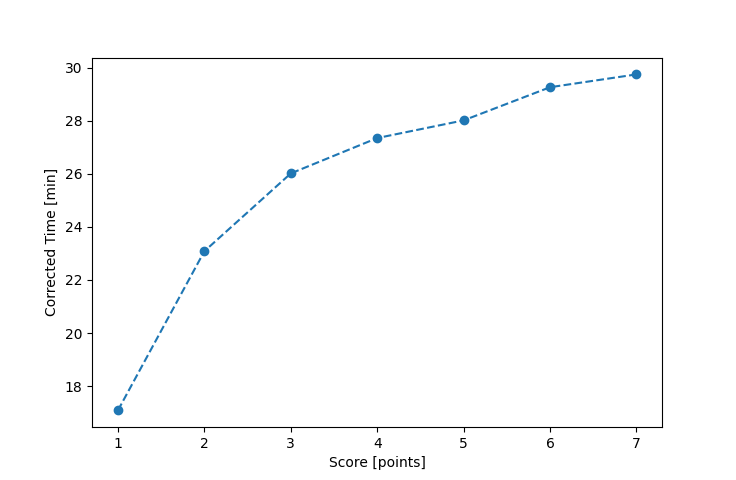

| Wind: | 2-3 (BFT) |
|---|---|
| RC: | Rod_H, Nick_H |
| Date: | August 10, 2025 |
| Notes: | M2 - Late Start (Rain) |
| Rank / Score | Name | Boat | Input Time [mm:ss] | Input Offset [mm:ss] | Race Time [mm:ss] | Race Time [s] | Handicap | Corrected Time [s] | Corrected Time [mm:ss] |
|---|---|---|---|---|---|---|---|---|---|
| 1.0 | Ian_O | US-1 | 20:36 | 05:00 | 15:36 | 936 | 0.91300 | 1025 | 17:05 |
| 2.0 | Matt_L | F5 | 27:18 | 05:00 | 22:18 | 1338 | 0.96600 | 1385 | 23:05 |
| 3.0 | Elliot_F | SF | 31:07 | 05:00 | 26:07 | 1567 | 1.00400 | 1561 | 26:01 |
| 4.0 | Craig_J | STFS | 33:53 | 05:00 | 28:53 | 1733 | 1.05600 | 1641 | 27:21 |
| 5.0 | Heather_B | SF | 33:08 | 05:00 | 28:08 | 1688 | 1.00400 | 1681 | 28:01 |
| 6.0 | Ryan_C | PIRAT | 34:23 | 05:00 | 29:23 | 1763 | 1.02900 | 1713 | 28:33 |
| 7.0 | Jay_H | SWSX | 33:32 | 05:00 | 28:32 | 1712 | 0.95900 | 1785 | 29:45 |
| 8.0 | Adam_E | SF | FIP_8 | -- | -- | -- | -- | -- | FIP_8 |

Application Notes:
All race results are unofficial
View source code at https://github.com/cessnao3/portsmouthracecalc/